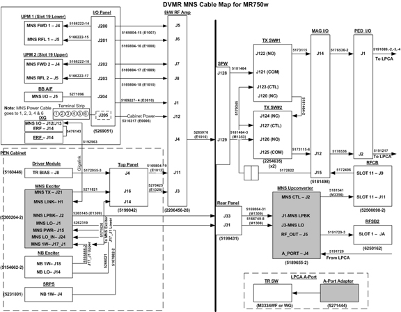

Illustration 18: DVMR MNS Cable Map

| NOTE: | Click to download a higher-resolution
PDF of the MNS Cable Map. |
Connection to IRF3 or IXG is J13 on later systems, sucha s MR750W. Early cable kits indicate the connection point is J12. Later kits indicate J12 or J13.